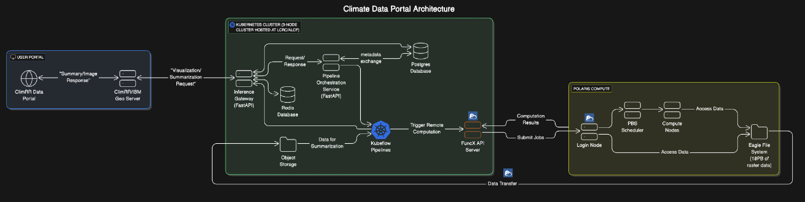
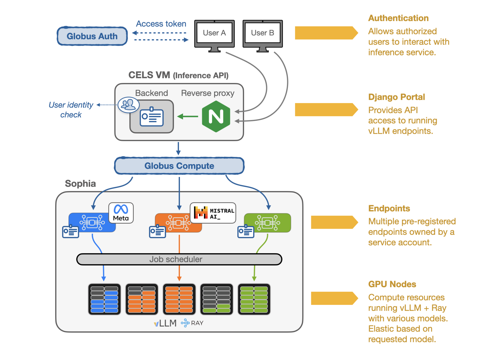
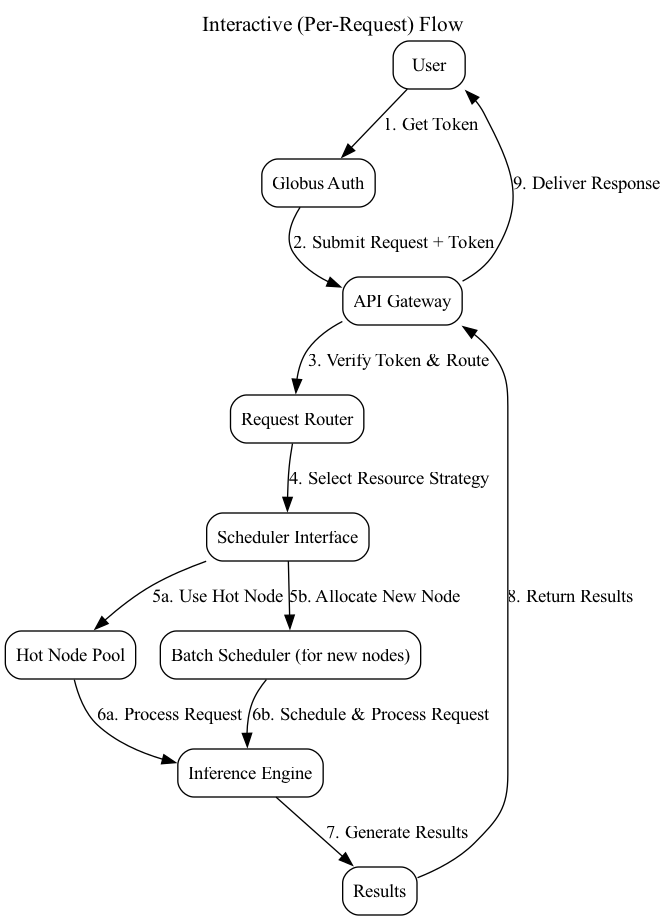
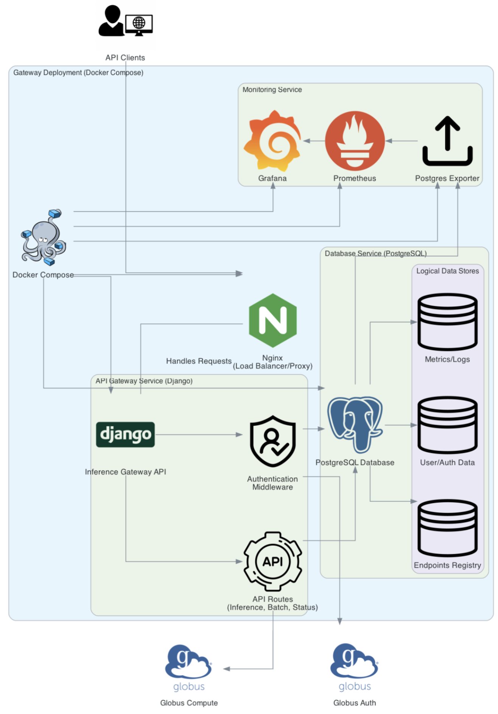

🚀 Data Services Architecture in Scientific Computing
🌉 Bridging the Gap Between Research and Technology
👨💻 Aditya Tanikanti
2025-06-17
👋 About Me
🎯 Professional Background
- 💻 Computer Scientist & Data Services Architect
- 🔬 6 years in scientific computing and HPC
- ⚙️ 6 years of application development/software engineering
- 📈 Expertise in scalable software solutions
- 🤖 Focus on AI systems and scientific workflows
🎯 Mission
“🌟 Bridging research and technology to accelerate discovery”
🔧 Expertise
🎯 Skills
- ⚡ Application Development
- 🔄 DevOps & Application Architecture
- 📊 Data Services & Management
- 🔬 Scientific Workflow Automation
🚀 Key Focus Areas
- 🤖 Workflow Automation & Scaling
- 🔍 Data Discovery & Analysis Portals
- 💾 Database as a Service
- 🐳 Container Orchestration (HPC & Kubernetes)
- ⚡ HPC & Edge Computing
- 🧠 Inference as a Service
🌟 Notable Projects
📄 Qresp (2017-2019)
🔬 Curation and Exploration of Reproducible Scientific Papers
- 📚 Open source software for scientific data organization
- 📝 Facilitates annotation and exploration of research data
- ♻️ Enhances reproducibility in scientific publications
- 🌐 Community driven research platform
🌐 ALCF Community Data Co-Op (2022-2025)
⚡ Production Environment for Edge Services
- 🌉 Bridges experimental laboratories and computing facilities
- 🔍 Project-specific data portals for search and discovery
- 🎯 Faceted search and data processing capabilities
- 🔐 Secure authentication and authorization
- 📊 Real-time data exploration and analysis
👤 myALCF Portal (2020-2025)
🏢 ALCF’s User Management Portal
- 👥 Manages user allocations and resources
- ⚡ Streamlines user access to computing resources
- 📊 Resource monitoring and usage tracking
- 🔐 Secure authentication and project management
🐳 Containerization at ALCF (2022-2025)
⚡ Container Orchestration and Scaling
- 🔄 Container orchestration and scaling
- 🚀 MPI-enabled container deployments
- 💪 High-performance computing container solutions
- 📦 Enterprise-grade container registry management
🌍 IBM GEOSPATIAL STUDIO
📊 Climate Data Analytics
🌍 Project Overview
🎯 Mission
- 🌡️ Climate and weather data analytics for North America
- 📈 30+ years of historical data analysis
- 🔬 Observed and modeled/simulated data support
- 📊 Metrics extraction (wind speed, temperature, pressure, etc.)
- 💾 Dataset downloads for downstream analysis
📊 Scale
- 💾 ~10PB of netCDF raster data
- 📏 4km and 12km spatial resolution
- 🌐 Distributed across HPC clusters
- ⚡ Real-time query capabilities
🏗️ System Architecture
🌍 Climate Data Portal Architecture
🔧 Architecture Components: - 🌐 User Portal | 🗺️ GeoServer | ☸️ Kubernetes Cluster | 💾 Object Storage | ⚡ ALCF Polaris Compute
🔄 System Workflow
🎯 Key Components
- 🌐 User Portal: Web interface for researchers
- 🗺️ GeoServer: Spatial queries and bounding boxes
- ☸️ Kubernetes: FastAPI inference gateway
- 💾 Object Storage: Intermediate data storage
- ⚡ ALCF Polaris: Heavy computation engine
⚡ Capabilities
- 📊 Bounding box queries
- 🔍 Real-time analytics
- 📈 Data visualization
- 💾 Bulk downloads
- 🔐 Secure access
🔄 Workflow Diagram
🌍 Climate Data Portal Workflow
🚧 Technical Challenges & Solutions
🎯 Key Challenges
- 🌐 Federated access to 10PB+ distributed data
- ⚡ Real-time and batch query scalability
- 🔍 Efficient data indexing, caching, and retrieval
- 👤 User-friendly, secure, and reliable access
✅ Solutions Implemented
- 🌐 Globus Compute for federated computation
- ☸️ Kubernetes microservices (FastAPI)
- ⚡ Async workflows and caching
- 💾 Postgres/Redis for metadata caching
- 📊 Web portal with status tracking
🌟 Broader Impact
- 🌍 IBM PAIRS Geoscope powers commercial weather apps
- 🔬 At ALCF: tailored for scientific research and high-performance analytics
- 📊 Makes petascale climate data accessible/actionable for research community
- ♻️ Supports reproducible research and open science
📈 Benefits
- ⚡ Accelerated research workflows
- 🔓 Open science enablement
- 📊 Data integration capabilities
- 🌐 Community collaboration
🤖 FIRST (2024-2025)
🧠 Federated Inference Resource Scheduling Toolkit
🚀 Project Overview
🎯 Core Features
- 🤖 LLM inference as a service on HPC clusters
- 🔌 OpenAI-compatible API (chat, completion, embedding, batch)
- 🌐 Federated access: multiple clusters and frameworks
- 🔐 Globus Auth for authentication
- ⚡ Globus Compute for remote job execution
📊 Scale & Impact
- 🚀 7M+ requests
- 🔢 9B tokens
- 👥 100+ users
- 📅 Since 2024
🏗️ System Architecture
🤖 FIRST System Architecture
🔧 Multi-cluster federated inference platform
🔧 Architecture Components
🎯 Core Systems
- 🌐 Inference Gateway (Django REST/Ninja)
- 🔐 Globus Auth: Federated identity & SSO
- ⚡ Globus Compute: Secure HPC execution
- 🤖 Inference Backends: vLLM, Infinity, SGLang
⚡ Advanced Features
- 🔄 Auto-scaling and hot node management
- 🎯 Dynamic model selection
- 🌐 Multi-cluster federation
- 📊 Real-time status via
/jobsendpoint
🔄 Request Flow Diagram
🤖 FIRST Request Flow
🏗️ Gateway Architecture
🤖 FIRST Gateway API
🌟 Key Features & Capabilities
🔌 API Features
- 💬 Chat, completion, embedding endpoints
- 📊 Batch mode for high-throughput
- 🎯 Dynamic model selection
- ⚡ Real-time job status
🚀 Performance
- 📈 Up to 150,000 requests/batch job
- 🌐 Multi-cluster federation
- ⚡ Auto-scaling capabilities
- 🔐 Enterprise-grade security
🚧 Technical Challenges & Solutions
🎯 Key Challenges
- 🌐 Federated, secure access to distributed HPC
- ⚡ Efficient job scheduling and resource utilization
- 🚀 Low-latency interactive and high-throughput batch
- 🔐 Robust authentication, audit, and compliance
✅ Solutions Implemented
- 🌐 Globus Auth/Compute for federated orchestration
- ⚡ Asynchronous Django API and caching
- 🤖 vLLM/Infinity for optimized inference
- 📊 Audit logging and Grafana dashboards
🌟 Impact & Use Cases
📊 Usage Statistics
- 🚀 7.3M+ inference requests
- 🔢 9B tokens processed
- 👥 100+ active users
- 📅 Since July 2024
🎯 Applications
- 🔬 Model evaluation
- 💬 Scientific chatbots (RAG)
- 📊 Synthetic data generation
- 🔐 Secure, scalable inference
🔗 Resources
🙏 Thank You!
📧 Let’s Connect!
🚀 Ready to build the future of scientific computing together!

🔬 Data Services Architect | 💻 Computer Scientist